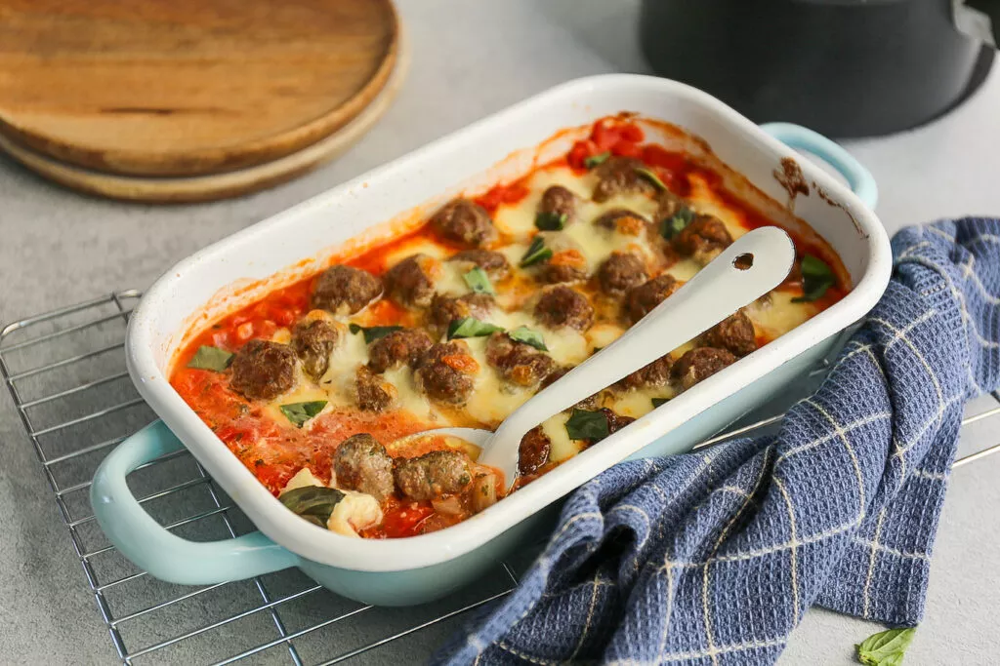

Gehaktballetjes in de oven

Ingredienten
Voor de gehaktballetjes
- 300 g gehakt
- paneermeel
- 1 ei
- 1 teen knoflook
- 1 tl peterselie
- 1 tl oregano
- snufje zout en peper
Voor de saus
- 1 bol mozarella
- 1 ui
- 200 g tomatenblokjes
- 200 ml gezeefde tomaten
- 2 tl basilicum
- snufje zout en peper
Bereiding
- Verwarm de oven op 200 graden.Meng het gehakt met alle ingrediënten behalve de paneermeel.
- Voeg daarna beetje per beetje de paneermeel toe totdat je een stevige massa hebt.
- Draai met je handen kleine gehaktballetjes.
- Verwarm een beetje boter of olie in een pan en bak de gehaktballetjes heel kort aan zodat
de buitenkant bruin wordt.
- De binnenkant van de gehaktballetjes is dan nog niet gaar, maar die garen we in de oven verder.
- Snijd de ui in stukjes. Doe de ui, tomatenblokjes, gezeefde tomaten, basilicum en een snufje
zout en peper in een ovenschaal.
- Leg de gehaktballetjes in de saus. Scheur/snijd de mozzarella in stukjes en verdeel over de ovenschaal.
- Zet de ovenschaal 20 minuten in de oven. Serveer met wat verse basilicum.